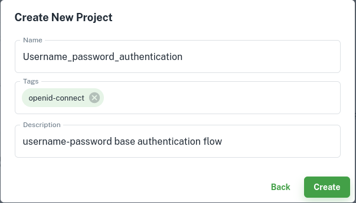

Quick start using Agama Lab#
In this quick start guide, we will build, deploy and test a simple Agama project using the Agama Lab. This project will enable user authentication using password when deployed on an IDP.
Major Steps involved in this process are:
- Create a new Agama project on the Agama Lab
- Defining the authentication flow
- Design the user interface
- Deploy Agama project
- Test using Tarp
This guide covers steps above in the following sections.
Prerequisites#
- We will use the Janssen Server to deploy the Agama project. Follow the instructions here to install the Janssen Server.
- You will need a GitHub account where Agama Lab GitHub app has been integrated. GitHub account can be a personal account or an organizational account. For this guide we will assume that a personal account is being used.
- Two new public GitHub repositories in your GitHub Account. These repositories will be used as development repository and release repository. Each repository should have at least one commit.
- Agama Lab should have permissions to access the development and the release repositories. This can be configured using the Agama Lab GitHub app in your user account.
Create a new Agama project#
We will use Agama Lab to create a simple username-password based user authentication project. The authentication flow will be similar to the one shown below.

An Agama project may include multiple components. For example, an authentication flow, a user interface, assets like organization's logo, external libraries, etc. In this project, we will see how to
- Define the authentication steps of a flow
- Design the user interface to capture user inputs
Let's get started.
Log into the Agama Lab#
-
Go to Agama Lab login page. Sign in using GitHub.

-
Authenticate on the GitHub authentication page.

-
After successful sign in, the project dashboard will be shown. Next step is to select the repository where you want to create the project. Select the
developmentrepository by clicking onChange Repository->Your Repositories-> select the repository ->Select.
-
The project dashboard with all the existing projects (if any) from the GitHub repository will be shown. New projects can be created, edited, and deleted from this project listing page.

Create a new project#
-
To create a new project, click on the
New Projectbutton. Enter the name and the description for the new project and click theCreatebutton.
-
This will create a new project.

Defining the authentication flow#
-
Create a flow file
Open the newly created project by clicking on . This will open the project in the project editor.
To start creating the flow, right-click on the
codedirectory >New>Flow File.
Give name and description for the flow file and then click
Create.
A newly created flow file contains one
startblock.
In the subsequent steps, we are going to create nodes in the flow using the flow editor. Refer to this guide if you need to understand how to create, delete and configure nodes.
-
Create
Get class referenceCall blockTo perform authentication we need to validate username and password provided by the user with the IDP. This operation is done using an instance reference of
AuthenticationServiceclass.To get the instance reference from the IDP, we first need the class reference of the
AuthenticationServiceclass. That is what we will do in this step.Drag the colored dot available on the right edge of the
startnode to create the next node in the flow. A list of available node types will be presented.
Select
Callnode. A newCallblock should appear with a link to theStartblock
Click the
Callblock and then click to open the configuration screen. Add configuration values as shown below.
This configuration will fetch a class reference of theAuthenticationServiceclass and store the reference in a variable calledauthServiceClass. This reference will be used to fetch an instance of this class from IDP in the subsequent steps.Call type:Call static methodclass name:io.jans.as.server.service.AuthenticationServicemethod name:classassign result to:authServiceClass
-
Create
Get instance referenceCall blockIn this step, we will fetch the instance reference of the
AuthenticationServiceusing the class reference that we obtained in the previous step. To fetch this instance reference from the IDP, we will useCdiUtilclass'sbeanmethod and pass the class reference of theAuthenticationService
as an input to it. Use the steps and configuration below to do this.After the
Get class referencenode, create a newCallnode.Click on the newly created
Callblock and by clicking open the configuration page. Input values as shown below in the configuration screen.Call type:Call static methodclass name:io.jans.service.cdi.util.CdiUtilmethod name:beanarguments:authServiceClassassign result to:authService
-
Create
result objectAssignment blockNext, we need to create an empty variable to store authentication results when we validate the credentials in subsequent steps.
Create a
Assignmentblock after theGet instance referencecall block and configure it as shown below.Resultant variable:authResult
-
Create Repeat block
Repeatblock represents the Repeat instruction of Agama DSL.Repeat block creates a loop to iterate over certain steps(blocks). We will create a repeat loop that allows 3 retries if the authentication fails.
Create a Repeat block after the
Create result objectblock
Click on the newly created
Repeatblock. Click . Input values as shown below in the configuration screen
-
Create a
Show login formRRF blockRRFblock represents the RRF instruction of Agama DSL. We will present the login form to the user using this node.Create an RRF block after the
Retry Authenticationblock.Remember that the
Retry Authenticationis aRepeattype of block. It has two possible paths.- One that originates from the colored dot on the bottom edge will be
labeled as
repeat. Execution of the blocks along this path will be repeated as configured in theRepeatblock. - Second path originates from the colored dot on the right edge of the
Repeatblock. This path is labeled asContinue. These blocks will be executed afterrepeatpath completes the execution.
The new
RRFblock should be created on theRepeatpath.
Click on the newly created
RRFblock. Click . Input values as shown below in the configuration screen.Template path:login.ftlhData variable to inject:authResultAssign result to:creds
With this configuration, the RRF block will
- Present an input form to the user. We will build the
login.ftlhin a later section - Capture and store user inputs like the user-name and password into the
credsvariable
At this stage, let's save the flow using the
Savebutton. This creates a new commit in your GitHub repository. - One that originates from the colored dot on the bottom edge will be
labeled as
-
Create
validate credentialscall blockCreate a
Callblock to process the username and password received from the user (in RRF) and validate them. The result of the validation is stored in a variable.Create a new call block after the
Show login pageblock.
Click on the newly created
Callblock. Click . Configure it as shown below.Call type:Call method on instanceVariable name:authServiceMethod name:authenticateArguments:creds.usernameandcreds.passwordAssign result to:authResult.success
-
Create a conditional When block
Whenblock represents the When instruction of Agama DSL.Create a conditional check using the
Whenblock to check if the user credentials were successfully validated.Create a new
Whenblock after theValidate credentialsblock.
Click on the newly created
Whenblock. Click . Input values as shown below in the configuration screen
-
Create Finish blocks
The
Finishblock represents the Flow finish instruction of Agama DSL.We will need to create two finish blocks.
- One finish block to terminate the flow when the authentication is successful.
- Second finish block to terminate the flow when the authentication is still not successful after 3 repeated attempts.
If the authentication was successful then the flow should finish and return the username. This will be achieved by adding a Finish block to the
Condition metbranch of theWhenblock. And if authentication fails after 3 attempts, we need anotherFinishblock following theRepeatblock.Drag and drop the colored dot on the lower vertex of the
Whenblock to create aCondition metbranch. Create aFinishblock on this branch.
Click on the newly created
Finishblock. Click . Input values as shown below in the configuration screen
Let's create a second finish block that will terminate the flow when all 3 authentication attempts have failed.
Create a
Finishblock on theContinuebranch of theRepeatblock.
Click on the newly created
Finishblock. Click . Input values as shown below in the configuration screen and clickSave.
Save the flow using the
Savebutton on flow canvas.The completed flow looks like below:
-
Check generated code
The flow is translated into Agama DSL. Click the
Codebutton to see the generated code.Flow co.acme.password Basepath "" // Get authentication service class reference from the IDP authServiceClass = Call io.jans.as.server.service.AuthenticationService#class // Get authentication service instance reference from the IDP authService = Call io.jans.service.cdi.util.CdiUtil#bean authServiceClass // Create empty object to store the authentication result authResult = {} // Retry 3 times to get the correct username and password Repeat 3 times max // Load login page for username and password input creds = RRF "login.ftlh" authResult // Validate username and password with IDP authResult.success = Call authService authenticate creds.username creds.password // Check if the authentication was successful When authResult.success is true // Authentication successful. Return the username. Finish creds.username // Max number of failed authentication attempts reached. return error and end the flow it_yrwmc = {success:false, error: "Maximum authentication attempts reached. Authentication failed."} Finish it_yrwmc
Design user interface#
In the RRF configuration step, we mentioned login.ftlh to render the login page elements.
We need to add login.ftlh to the Agama project so that the flow can use it during the execution.
Use the steps below to create the page.
-
Create a template file
On the left project explorer menu, click on
web>New>Freemarker Template
Select
+ Createunder theNew Blank Template
Give
NameandDescriptionas shown below and clickCreate
-
Use the visual editor
This opens a visual editor to create an Apache FreeMarker template. Use this visual editor to create a template as per the need. For this article, we will use the code below.

Click
Edit HTML. This opens a text editor. Remove existing code in the editor and paste the code shown below.<!DOCTYPE html> <html lang="en"> <head> <meta charset="UTF-8"> <meta http-equiv="X-UA-Compatible" content="IE=edge"> <meta name="viewport" content="width=device-width, initial-scale=1.0"> <title>Username_Password_Form </title> <link rel="stylesheet" href="https://cdn.jsdelivr.net/npm/tailwindcss@2.2/dist/tailwind.min.css" type="text/css"> </head> <body> <div class="md:h-screen bg-white relative flex flex-col justify-center items-center"> <div class="md:border md:border-gray-300 bg-white md:shadow-lg shadow-none rounded p-10 align-middle"> <div class="flex flex-col items-center space-y-3"> <div class="flex"> <img src="https://gluu.org/wp-content/uploads/2020/12/logo.png" id="i4xwu"> </div> <span class="text-2xl font-semi-bold leading-normal">Form</span> <p class="leading-normal">Enter your Username and Password </p> </div> <form method="post" class="my-8"> <div class="relative mb-2"> <label for="username" class="label mt-2 ml-1 leading-tighter text-gray-600 text-base cursor-text"> Username </label> <input type="text" id="username" name="username" autofocus="" required="" class="w-full rounded px-3 border border-gray-300 pt-2 pb-2 focus:border-green-700"> </div> <div class="relative mb-2"> <label for="password" class="label mt-2 ml-1 leading-tighter text-gray-600 text-base cursor-text"> Password </label> <input type="password" id="password" name="password" autofocus="" required="" class="w-full rounded px-3 border border-gray-300 pt-2 pb-2 focus:border-green-700"> </div> <div class="space-y-9"> <div class="text-sm flex justify-center items-center"> <button type="submit" class="py-2 px-6 rounded text-white btn bg-green-500 hover:bg-green-600"> Submit </button> </div> </div> </form> </div> </div> </body> </html>
Click Save changes

This will render the page in the visual editor.

Publish the project#
At this point we have all the components of an Agama project ready, and they are
stored in
the development repository. Next step is to publish the project into the
release repository. Publishing will create the first release of this project
in the release repository. Artifacts linked to the release in the
release repository contain the .gama package. This .gama package is used
to deploy the project in the IDP.
To publish the project, click on any of the files in the left project explorer,
and click Publish Project.

Enter a desired version number for the first release and the web link to the
GitHub release repository. Click Publish

Upon successful publishing, the Agama Lab's Releases dashboard is shown.
It lists the project that we released.
Click on the project name to go to the GitHub repository release page where
.gama file has been released

Download the .gama file from here to deploy on to the Janssen Server.

Deploy Agama project#
-
Download the
.gamafile on the Janssen Server. -
Open Janssen Server TUI and upload the
.gamapackage using these instructions -
Ensure that the project has been uploaded without any errors by refreshing the project listing after the upload.
Testing using Janssen Tarp#
We will use the Jans Tarp, a browser extension based tool from the Janssen Project, to test this Agama project.
- Install Jans Tarp browser plug-in
- Follow these instructions to test using Jans Tarp. Remember that the
ACR valueis the composed of fully qualified name of your flow (in our caseco.acme.password) preceded byagama_. That isagama_co.acme.password. - In a successful test run, the browser should prompt user for the user-name and password using the same user-interface that we built in the previous steps.

- Upon entering a valid user-name and password, the tarp should present a page with access token.

Created: 2023-05-05